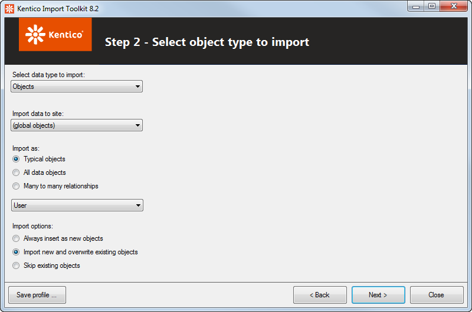
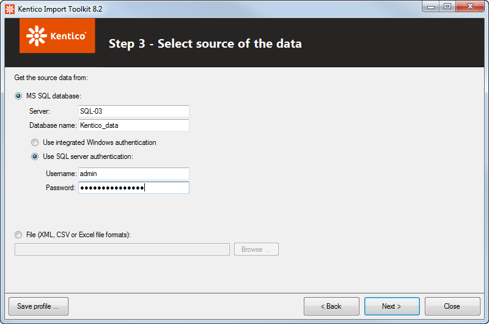

Importing data from external sources
You can launch Kentico Import Toolkit from the Windows Start menu -> All programs -> Kentico <version> -> Utilities.
Kentico Import Toolkit (initial screen)
Choose if you want to create a new import session or use an existing import profile:
Start new import session - starts a new import session where you can configure all the options of the import. In each of the configuration steps, you can click the Save profile button to save all the configuration done until that point. The configuration is saved as an .iprofile file in a destination of your choice.
Load import profile - by selecting this option, you can load an .iprofile file that you created using the Start new import session. All the configuration you have done prior to saving the configuration file will be pre-filled automatically.
Step 1 - Select target project
Choose the root folder of the project into which you want to import your data and select the check box below the field.
By selecting the check box, you confirm that you have performed a backup of your project, so that you can roll back any potential damage caused by the import.
Step 2 - Select object type to import
Select the object type that will be used to store the imported data in Kentico.

Selecting object types to import
Select data type to import:
Custom table items - imports the data into a custom table selected in the Import to custom table drop-down list.
On-line form items - imports the data as form records of the on-line form selected in the Import to on-line form drop-down list.
Objects - imports the data as Kentico objects of a type selected in the Import as radio buttons. Three options are offered:
Typical objects - offers a set of typically used objects.
All data objects - includes all data objects except for many to many relationship objects.
Many to many relationships - provides a selection of objects with many to many relationship such as contact list, group permissions and workflow step roles.
Object attachments (metafiles) - imports the data as metafiles of Kentico objects. The Attach to object type drop-down list offers a selection of object types to which the metafiles will be attached.
You can restrict which objects appear in the Objects and Object attachments lists by adding keys to the ImportToolkit.exe.config file as described in the Restricting the selection of objects section.
Pages - imports the data as pages of the type selected in the Import as drop-down list.
Automatically publish pages under workflow - imported pages will be automatically published when a workflow applies to them.
By enabling the Import as products option, only product page types will be offered in the Import as drop-down list and E-commerce products will be created together with the product pages.
Attachments - imports the data as attachments of a page specified in the Step 6 of the wizard. Note that image variants of attachments cannot be imported.
Resource strings - imports the data as resource strings into a culture selected in the Import as drop-down list.
Import data to site:
This drop-down list allows you to select a site to which the imported objects will be assigned.
Where applicable, you can also choose (global objects) from the drop-down list to import the data as global objects not bound to a specific website.
Import options:
These radio buttons allow you to set the tool's behavior when it detects that some of the imported data already exist in Kentico. Existing objects can either be detected automatically (based on code name or GUID), or by a WHERE condition specified in Step 6 of the wizard:
Always insert as new objects/pages- all imported data will be inserted as new objects/pages, even if some of the data exists in Kentico.
Import new and overwrite existing objects/pages- all imported data will be inserted. Objects that already exist in Kentico will be overwritten by the newly imported equivalents. You must select this option if you wish to import new culture versions of an existing page (node).
Skip existing objects/pages- existing objects/pages will be skipped and only new ones will be imported.
Step 3 - Select source of the data
Specify the source of the imported data:
MS SQL database - imports data from a specified MS SQL database.
Server - name of the database server containing the source database.
Database name - name of the source database.
Use integrated Windows authentication - the current user's Windows account will be used to log on to the database server. Use only if your server is configured for Windows authentication.
Use SQL server authentication - logon credentials filled into the Username and Password fields below will be used to log on to the database server.
File (XML, CSV or XLSX file formats) - imports data from a file specified in the provided field.

Step 4 - Select the data
The appearance of this step depends on the type of data source selected in the previous step. Click the link to expand:
Step 5 - Source data preview
Here you can check if you specified the source data correctly in the previous steps.
Step 6 - Column mappings
Check and adjust the mapping of columns from the source data to the target Kentico data.
Default column mapping
The import toolkit attempts to automatically match equivalent columns based on their names. However, the default mapping may not be correct when importing from custom external sources (for example, custom columns with an ID suffix may be mapped to an unrelated ID column in Kentico). Always double check the column mappings and adjust them as required. Enable the Show advanced columns check box to see all available column options.
The mappings grid contains the following:
Target field - field of the target object/page into which the data should be imported. If you turn on the Show advanced columns check-box above the grid, additional columns that you typically would not use as an import target are offered as well.
Required - indicates if the target field can be null (cleared) or not (selected).
Source field or expression - source field from which data will be imported into the target field. You can use the following expressions in the text to get the values dynamically:
=macroexpression - evaluates the specified macro expression using the source data and uses its result in the value. For example: ={%ItemText%} - {%ItemOrder%}
#<source>query - executes a query against the source database and uses the result in the field. For example: #<source>SELECT TOP 1 UserID FROM CMS_User WHERE UserName ='{%SourceUserName%}'
#<target>query - executes a query against the target database and uses the result in the field. For example: #<target>SELECT TOP 1 ...
#<file> - you can specify a file using a URL or a disk path. Binary data of the file will be used as the value of the target field. It is also possible to specify the path using the source data macro expression. For example: #<file>C:\files\attachments\{%AttachmentName%}
Default value - value that is used if the source field does not contain any value (or when its value is NULL).
FK mapping file - you can specify an .fkmap file from a previous export session which converts an ID field to a new field mapped in the previous session. See the following text for more details.
Depending on selected options in Step 2 of the wizard, you can see additional fields below the grid:
When importing the data as pages - you can see a field Import the pages under following parent path or parent node ID. Use this field to specify the path (e.g., /Products/Smartphones) or NodeID of the page under which you want to create the imported pages. You can use the same expressions as for the Source field or expression field to obtain the values dynamically.
When importing the data as page attachments - there is also a special field below the grid. In this case, you need to specify the path to the page to which you want to attach the imported attachments.
If you selected Import new and overwrite existing objects in the Step 2 of the wizard, you can specify a WHERE condition in the field below the list. Based on this, the existing objects to be skipped or overwritten will be identified. You can also use macro expressions to get the values dynamically, for example: KenticoColumnName = '{%SourceFieldName%}'
Importing new culture versions of an existing page
If you wish to use the import toolkit to add language versions to an existing page (node in the content tree), your source data must contain a column with appropriate NodeAliasPath or NodeID values. These values are required for the import to match data records to corresponding content tree nodes (for more information, see Page database structure).
You can map the appropriate source column to NodeAliasPath or specify a default value (e.g. /News/New-Consulting-Services).
If your source data does not contain NodeID values, you can specify the value by copying the following expression into the Source field or expression column of the NodeID row:
#<target>SELECT TOP 1 NodeID FROM View_CMS_Tree_Joined WHERE NodeAliasPath ='{%NodeAliasPath%}'
The #<target> query is used to select the NodeID of the page that should be updated in the target database.
The {%NodeAliasPath%} macro is resolved into the alias path of your page versions in the source data. Because all language versions of the same page share the same alias path, this allows you to find the appropriate NodeID in the target database.
Please note that the Import new and overwrite existing pages option must be selected in Step 2 of the wizard in order for this to work correctly.
If you want to return to the default mappings after adjusting them, click Reset to default mappings above the grid.
You can also enable the Save the old ID to new ID mappings to file check-box. This enables you to save mappings of source ID columns to target ID columns into an .fkmap file that can be used during another session in the FK mapping file column above. The following example explains the use of the file:
You have a list of questions and a list of answers, where each answer is bound to a question with a foreign key. And you want to import both lists and preserve their bindings:
Import the questions and save the ID mapping to a questions.fkmap file.
Then import the answers and use the questions.fkmap file in the FK mapping file column of the field that contains the foreign key.
Step 7 - Target data preview
You can see a preview of the data as it will look when imported to the target. Before proceeding, choose how you want to import the data:
Import the data - imports the specified data into Kentico.
Only simulate the import (does not commit the changes) - performs the import to validate that the data is correct, but does not commit the changes to the database.
Step 8 - Importing data
The utility displays a log, showing you the progress of the import.
If an error occurs during the import, e.g., when there are restricted characters in the imported data, the utility displays an error dialog. The error message contained in the dialog explains the issue and provides you with the following options:
Abort - cancels the whole import process.
Retry - you can correct the data in the displayed row and click this button to import the corrected data — without the need of going through the import process again.
Ignore - the current record will be skipped and not imported.
Ignore all - all records containing errors will be skipped during the rest of the import.
Import finished
The final step informs you of the results of the import. Imported data should already be visible in Kentico at this point. You can perform the following actions:
Save log - saves the import log created while the import was being performed.
Import other data to the same project - redirects you to Step 2 of the wizard where you can select object type to import for the same target project.
Start new import session - redirects you to Step 1 of the wizard where you can start a new import session.
Close the import tool - closes the utility.
Go back to the mappings and try import again - this options becomes available if you selected the Only simulate import option in Step 7 or if you chose to Abort the import process.
Now is a good time to save the import profile for a later reuse. The import profile is also required for running the import utility from the command line.
Restricting the selection of objects
You can reduce the selection of objects offered in the drop-down lists in Step 2 of the Import Toolkit by adding optional keys to the ImportToolkit.exe.config file. You can find the configuration file in <Kentico installation folder>\Bin (typically C:\Program Files (x86)\Kentico\<version number>\Bin).
The keys accept object type values, separated by semicolons. To find the values for specific object types, open the System application in the Kentico administration interface and select the Object types tab.
Objects
After selecting the Objects option from the Select data type to import drop down list, you can choose an imported object in the Import as section. You can restrict which objects appear in the Import as drop-down list depending on the selected radio buttons:
Typical objects - for example, the following key modifies the list to contain only Product, Manufacturer and Supplier.
<add key="TypicalObjectTypes" value="ecommerce.sku;ecommerce.manufacturer;ecommerce.supplier" />All data objects - for example, the following key modifies the list to contain only Email feed, Email feed recipient and Email.
<add key="AllObjectTypes" value="newsletter.newsletter;newsletter.subscriber;newsletter.issue" />Many to many relationships - for example, the following key modifies the list to contain only Workflow user, Workflow step and Workflow step user.
<add key="MNRelationshipTypes" value="cms.workflowuser;cms.workflowstep;cms.workflowstepuser" />Object attachments (metafiles)
After selecting the Object attachments (metafiles) option from the Select data type to import drop-down list, you can restrict the objects that are available in the Attach to object type list:
Attach to object type - for example, the following key modifies the selection to contain only Email and Email marketing template.
<add key="MetafileObjectTypes" value="newsletter.issue;newsletter.emailtemplate" />